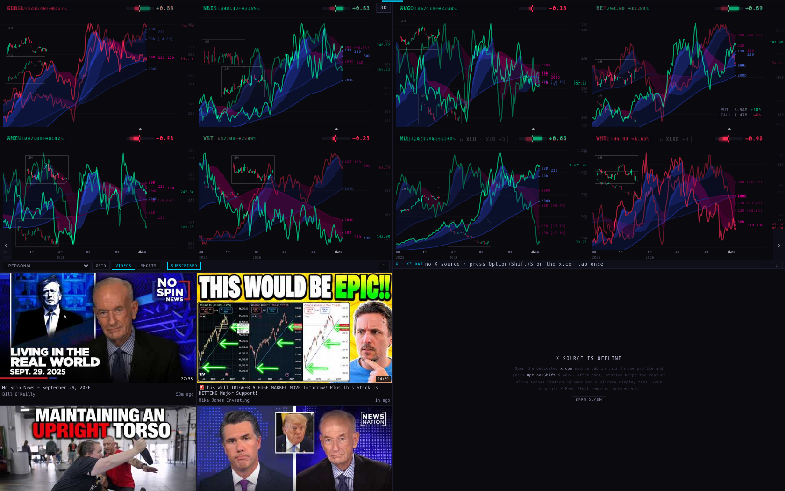
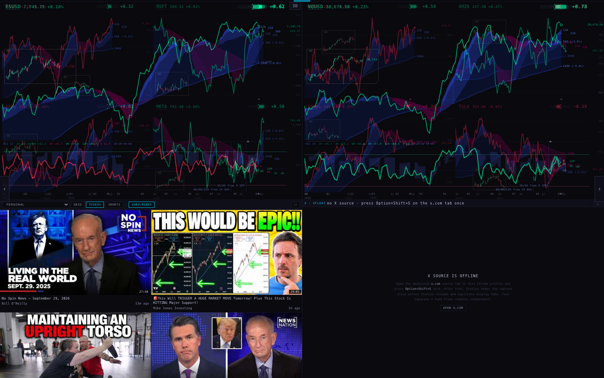
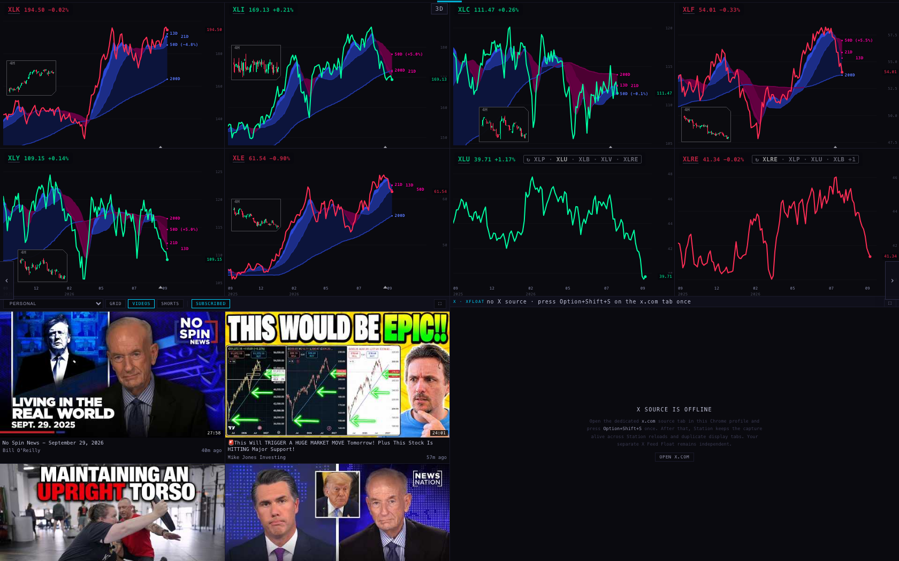
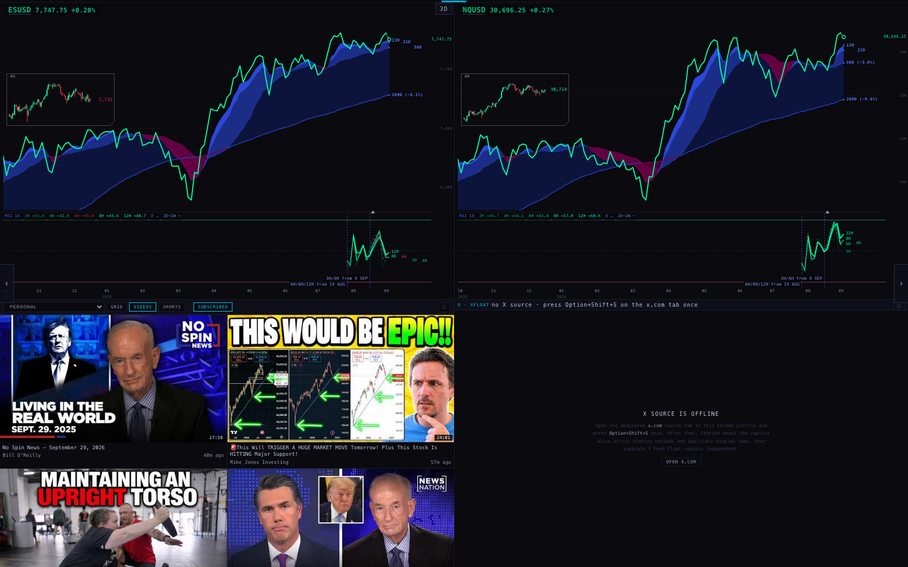
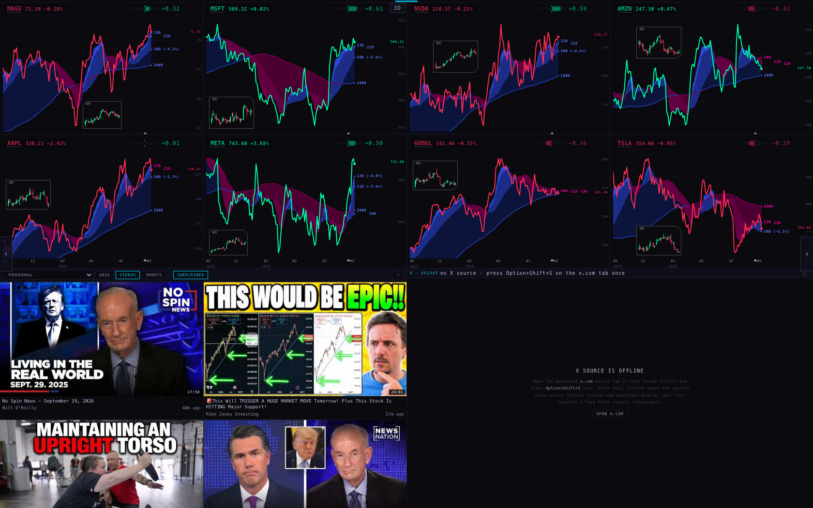
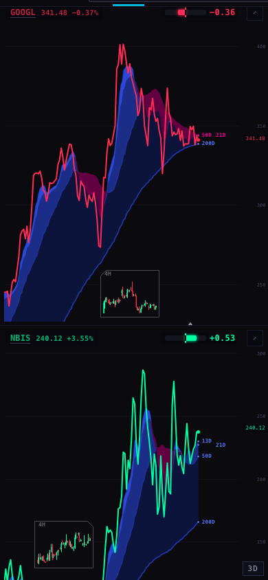

Branch station/rotation-20260929, made from today's live Station (bacb424). Not pushed and not deployed. On this branch, a page change works like the smooth in-slot rotation: the next page is drawn out of sight, then the whole page fades in over the old one. I drove every page in the rotation, in order, twice, headlessly, on today's live code and on this branch, and measured each change frame by frame.
Alan, 29 Sep evening: "THIS METHOD HOW IT LOOKS WHEN THE SAME CHART ROTATIONS HAPPEN — CAN IT BE TESTED TO SEE IF IT WORKS FOR THE WHOLE ENTIRE ROTATION SOMEHOW? ITS VERY SMOOTH AND THE PAGE CHANGES ARE VERY ROUGH."
These are the 21 workflow pages in their rotation order from deck/scenes.js. Note: the brief says 19 pages, but the code has 21: the two weekly pages were added to the workflow on 25 Sep. I drove all 21 of them, so that nothing was left out. Headless browser at 1680 × 1050, 12 seconds per change, measured on every painted frame (about 60 a second).
| changes | a pane empty for more than 0.1 s | worst empty pane | old chart shown in a new box | box moves beyond the layout | charts that arrived fully dressed | typical time until the page is finished | CPU for the lap | chart documents open | |
|---|---|---|---|---|---|---|---|---|---|
| Live · cold lap | 21 | 19 | 9.1 s | 12 | 0 | 94 of 132 | 814 ms | 30.9 s | 10–10 |
| Branch · cold lap | 21 | 0 | 0 ms | 0 | 0 | 132 of 132 | 1.8 s | 32.0 s | 12–18 |
| Live · warm lap | 21 | 6 | 3.8 s | 9 | 0 | 57 of 132 | 274 ms | 26.9 s | 10–10 |
| Branch · warm lap | 21 | 0 | 0 ms | 0 | 0 | 132 of 132 | 1.3 s | 32.6 s | 12–18 |
"Chart documents open" counts every frame on the Station, including the two video panes and the X pane. This table is the third full run. Run 1 matched charts by name only, so it could not tell a chart from the same name with another study (the two RSI pages). Its numbers: live had a pane empty for more than 0.1 s on 19 + 7 changes, the branch on 0 + 0. Lap CPU was live 32.4 / 25.3 s and branch 32.0 / 32.6 s. Run 2 matched charts by their full address. It turned up two things, both fixed before run 3. First, the put/call pane on MACRO · 4H has no 4-hour history tonight and shows its reason instead. The branch waited its full 8 s for it, and the rig wrongly counted that pane as empty on both live and branch. Second, the switch-over sometimes ran one frame (16 ms) before the fade's last step was painted. The *-run1-* and *-run2-* files keep those runs.
| page (in rotation order) | charts | LIVE today (bacb424) | THIS BRANCH | ||||||||
|---|---|---|---|---|---|---|---|---|---|---|---|
| longest blank pane | old chart shown in a new box | charts that arrived with price, clouds, lens and chip | whole page finished | CPU s | longest blank pane | box moves beyond the layout | charts that arrived with price, clouds, lens and chip | whole page finished | CPU s | ||
| INDEXES · WEEK | 8 | 1.1 s | 1.1 s | 1 of 8 | 1.4 s | 1.40 | 0 ms | — | 8 of 8 | 1.8 s | 1.52 |
| MACRO · WEEK | 6 | 4.1 s | 4.2 s | 5 of 6 | 5.3 s | 1.12 | 0 ms | — | 6 of 6 | 3.9 s | 1.45 |
| TARGETS | 8 | 386 ms | 456 ms | 0 of 8 | 1.1 s | 1.65 | 0 ms | — | 8 of 8 | 2.0 s | 1.61 |
| SECTORS | 8 | 249 ms | — | 7 of 8 | 583 ms | 1.53 | 0 ms | — | 8 of 8 | 1.5 s | 1.51 |
| SPY + QQQ | 2 | 1.9 s | 1.9 s | 1 of 2 | 1.9 s | 1.04 | 0 ms | — | 2 of 2 | 1.7 s | 1.21 |
| MAG 7 | 8 | 381 ms | 437 ms | 8 of 8 | 769 ms | 1.52 | 0 ms | — | 8 of 8 | 2.0 s | 1.62 |
| AI 1 · CHIPS | 8 | 348 ms | — | 5 of 8 | 1.5 s | 1.55 | 0 ms | — | 8 of 8 | 3.1 s | 2.05 |
| AI 2 · MEMORY, RACKS | 8 | 319 ms | — | 7 of 8 | 642 ms | 1.62 | 0 ms | — | 8 of 8 | 2.3 s | 1.41 |
| AI 3 · POWER, CLOUDS | 8 | 628 ms | — | 6 of 8 | 874 ms | 1.60 | 0 ms | — | 8 of 8 | 1.6 s | 1.33 |
| OTHER | 8 | 496 ms | — | 6 of 8 | 814 ms | 1.42 | 0 ms | — | 8 of 8 | 2.0 s | 1.39 |
| BLUE CHIP | 8 | 611 ms | — | 7 of 8 | 932 ms | 1.49 | 0 ms | — | 8 of 8 | 1.6 s | 1.49 |
| SPY + QQQ · DAY | 2 | 9.1 s | 9.1 s | 1 of 2 | 9.2 s | 1.32 | 0 ms | — | 2 of 2 | 1.3 s | 1.55 |
| OTHER INDEXES · DAY | 6 | 573 ms | 664 ms | 5 of 6 | 802 ms | 1.44 | 0 ms | — | 6 of 6 | 2.1 s | 1.29 |
| OTHER INDEXES · RSI | 6 | 52 ms | — | 5 of 6 | 391 ms | 1.91 | 0 ms | — | 6 of 6 | 1.3 s | 2.01 |
| MACRO · DAY | 6 | 856 ms | — | 6 of 6 | 925 ms | 1.34 | 0 ms | — | 6 of 6 | 1.9 s | 1.08 |
| TARGETS · DAY | 8 | 567 ms | 634 ms | 2 of 8 | 726 ms | 1.70 | 0 ms | — | 8 of 8 | 2.5 s | 1.77 |
| TARGETS · RSI | 8 | 94 ms | — | 7 of 8 | 657 ms | 2.44 | 0 ms | — | 8 of 8 | 1.4 s | 2.30 |
| MACRO · 4H | 4 | 2.9 s | 3.0 s | 4 of 4 | 3.0 s | 1.20 | 0 ms | — | 4 of 4 | 3.8 s | 1.17 |
| INTRADAY · 4H | 6 | 481 ms | 526 ms | 6 of 6 | 536 ms | 1.35 | 0 ms | — | 6 of 6 | 1.5 s | 1.68 |
| INTRADAY · 1H | 4 | 452 ms | 452 ms | 4 of 4 | 480 ms | 1.05 | 0 ms | — | 4 of 4 | 1.3 s | 1.09 |
| INTRADAY · 30M | 2 | 349 ms | 349 ms | 1 of 2 | 358 ms | 1.25 | 0 ms | — | 2 of 2 | 1.4 s | 1.49 |
| page (in rotation order) | charts | LIVE today (bacb424) | THIS BRANCH | ||||||||
|---|---|---|---|---|---|---|---|---|---|---|---|
| longest blank pane | old chart shown in a new box | charts that arrived with price, clouds, lens and chip | whole page finished | CPU s | longest blank pane | box moves beyond the layout | charts that arrived with price, clouds, lens and chip | whole page finished | CPU s | ||
| INDEXES · WEEK | 8 | 63 ms | 63 ms | 8 of 8 | 274 ms | 1.34 | 0 ms | — | 8 of 8 | 1.2 s | 1.34 |
| MACRO · WEEK | 6 | 0 ms | — | 6 of 6 | 0 ms | 1.04 | 0 ms | — | 6 of 6 | 1.1 s | 1.38 |
| TARGETS | 8 | 0 ms | — | 0 of 8 | 153 ms | 1.33 | 0 ms | — | 8 of 8 | 1.3 s | 1.72 |
| SECTORS | 8 | 672 ms | — | 2 of 8 | 787 ms | 1.25 | 0 ms | — | 8 of 8 | 1.4 s | 1.75 |
| SPY + QQQ | 2 | 20 ms | 20 ms | 2 of 2 | 144 ms | 0.93 | 0 ms | — | 2 of 2 | 1.1 s | 1.18 |
| MAG 7 | 8 | 69 ms | 69 ms | 1 of 8 | 268 ms | 1.41 | 0 ms | — | 8 of 8 | 1.2 s | 1.55 |
| AI 1 · CHIPS | 8 | 0 ms | — | 1 of 8 | 111 ms | 1.23 | 0 ms | — | 8 of 8 | 1.3 s | 2.02 |
| AI 2 · MEMORY, RACKS | 8 | 0 ms | — | 0 of 8 | 120 ms | 1.26 | 0 ms | — | 8 of 8 | 1.2 s | 1.42 |
| AI 3 · POWER, CLOUDS | 8 | 0 ms | — | 0 of 8 | 133 ms | 1.19 | 0 ms | — | 8 of 8 | 1.2 s | 1.52 |
| OTHER | 8 | 0 ms | — | 0 of 8 | 118 ms | 1.10 | 0 ms | — | 8 of 8 | 1.3 s | 1.41 |
| BLUE CHIP | 8 | 0 ms | — | 0 of 8 | 119 ms | 1.14 | 0 ms | — | 8 of 8 | 1.2 s | 1.59 |
| SPY + QQQ · DAY | 2 | 50 ms | 50 ms | 2 of 2 | 542 ms | 1.54 | 0 ms | — | 2 of 2 | 1.6 s | 1.94 |
| OTHER INDEXES · DAY | 6 | 76 ms | 76 ms | 1 of 6 | 346 ms | 1.36 | 0 ms | — | 6 of 6 | 1.4 s | 1.52 |
| OTHER INDEXES · RSI | 6 | 52 ms | — | 5 of 6 | 635 ms | 1.83 | 0 ms | — | 6 of 6 | 1.4 s | 1.80 |
| MACRO · DAY | 6 | 39 ms | — | 6 of 6 | 293 ms | 1.27 | 0 ms | — | 6 of 6 | 1.2 s | 1.18 |
| TARGETS · DAY | 8 | 0 ms | — | 0 of 8 | 223 ms | 1.33 | 0 ms | — | 8 of 8 | 1.4 s | 1.96 |
| TARGETS · RSI | 8 | 170 ms | — | 7 of 8 | 818 ms | 2.14 | 0 ms | — | 8 of 8 | 1.6 s | 2.11 |
| MACRO · 4H | 4 | 3.8 s | 3.8 s | 4 of 4 | 4.1 s | 0.96 | 0 ms | — | 4 of 4 | 3.6 s | 1.25 |
| INTRADAY · 4H | 6 | 664 ms | 664 ms | 6 of 6 | 772 ms | 1.33 | 0 ms | — | 6 of 6 | 1.7 s | 1.80 |
| INTRADAY · 1H | 4 | 967 ms | 994 ms | 4 of 4 | 1.0 s | 1.05 | 0 ms | — | 4 of 4 | 1.8 s | 1.09 |
| INTRADAY · 30M | 2 | 399 ms | 399 ms | 2 of 2 | 402 ms | 0.90 | 0 ms | — | 2 of 2 | 1.3 s | 1.04 |
"Longest blank pane" is the longest total time, in this change, that any one chart pane had nothing drawn in it. "Whole page finished" is the moment from which every chart on the new page shows its line, price, clouds, lens (or its settled reason for having none) and Geiger chip (when the name has a reading). On the branch this includes the time the old page stays up while the new one draws, plus the 0.9 s fade. "Arrived fully dressed" counts, for every chart that newly appeared, whether all of those were already on it in the first frame it could be seen. A dash means no chart newly appeared.
These were captured on the warm lap of the first full run of this branch (build 09a189c; the later fixes do not change what a fade looks like), at the moment the page fade was between 30% and 80% through.


What is visible:
For comparison, here is today's live Station at 0.25 s into the same three changes, on the warm lap. By then the live code had already swapped the charts. On SECTORS, the two rotating slots (XLU and XLRE) show a bare line with no clouds, no lens box and no Geiger chip; those arrive later. That is the "pop-in" the table counts.



The cold lap is where live is roughest (SPY + QQQ · DAY left both big charts dark for 9.1 s while ES and NQ loaded their daily bars and RSI fan; MACRO · WEEK left panes dark for up to 4.1 s). On the branch, those same changes kept the previous page on screen until the new charts were drawn. I did not screenshot the live cold lap, because those panes are simply dark.

This branch deliberately keeps today's page change on the phone. A phone stacks the charts and only keeps two of them live, so there is no wall to dissolve. The screenshot shows TARGETS on a 390-wide phone after a page change: GOOGL and NBIS, each with its price, clouds, lens box and Geiger chip.
A short 4-change check on the phone behaved like live does today. The panes are briefly empty during a change (up to 4.7 s on a cold MACRO · WEEK). Making the phone dissolve too would be a separate piece of work.
You also asked (no fix needed) whether the in-slot rotation stays as smooth at step 50 as at step 1. I left INTRADAY · 4H rotating by itself for 11 minutes: 228 slot fades, which is 57 steps of its four rotating slots. I compared the first two minutes with the last two.
| slot fades | empty pane time | longest frame gap | frames slower than 50 ms | CPU (share of one core) | memory (whole browser) | chart documents open | parked frames | |
|---|---|---|---|---|---|---|---|---|
| steps 1–12 | 44 | 0 ms | 116 ms | 57 of 7632 | 13% | 430–567 MB | 12 / 16 | 2–6 |
| steps 46–57 | 40 | 0 ms | 82 ms | 38 of 7683 | 12% | 449–567 MB | 16 | 4–6 |
Answer: yes, it holds. Nothing grows: the same number of chart documents stays open (16 once the rotation has filled its parked frames, including the video and X panes), memory stays in the same band, CPU is the same or slightly lower, and no pane is ever empty. The first two minutes show slightly more slow frames and one 116 ms gap. That is when the parked frames are first being built; after that the frames are reused. This was measured on the first build of this branch (09a189c). The two fixes made after that only affect page changes, and the in-slot code itself is the same as live. The only related change is that the two fixed slots (ES, NQ) may now also keep a parked frame for the next page change. The full 10-second log is in inslot-intraday4h-1680.json.
tests/station-page-dissolve-20260929.test.mjs (7 checks, plus 1 that is off by default).branch-1680-rows.json: every page, in order, cold and warm) has no change with a pane empty for over 100 ms, no box move beyond the layout, and no old chart in a new box.STATION_BROWSER_GATE=1 node --test tests/station-page-dissolve-20260929.test.mjs reruns the whole rotation, twice, in a headless browser against the live chart API. It takes about 10 minutes. It fails if any change leaves a pane empty for longer than 100 ms or moves a pane's box. It is off in the normal test run because it needs the network and takes minutes.deck/scenes.js (WORKFLOW_IDS), unchanged. No page, ticker or range was changed.deck/index.html, deck/scenes.js and the chart shell). The branch = this worktree.scintilla-massive-chart-api.fly.dev). The API only accepts scintillahub.ai as the origin, so the rig fetches it from node with that origin and hands the answer to the page (a proxy). Supabase reads went through as normal. Every write the page tried (YouTube and Google logging posts) was refused by the rig, so nothing was written anywhere.harness/ folder has the rig (rotation.mjs), the reducer (analyze.mjs) and this page's builder. The *-rows.json files have one row per change. The raw frame-by-frame logs (about 37 MB each) are not committed._indicators/ or the chart pane (chart/, station-shells/chart-v1/).Built 29 Sep 2026 by the Urth lane (Opus). Branch station/rotation-20260929 from bacb424.